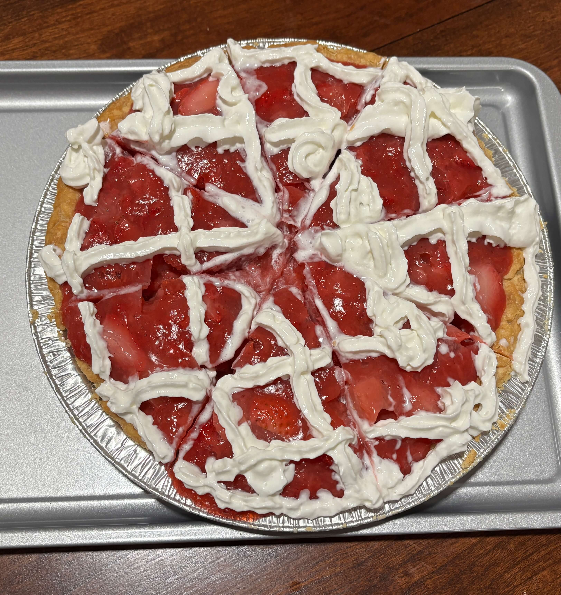

Home
Strawberry Pie

Makes 8 servings, 1 (9 inch) pie
Ingredients
- 1 (9-inch) graham cracker or deep dish pastry pie crust (recommend The Village PieMaker ready to bake pie crusts)
- 2 pounds fresh strawberries, divided, plus a few extra for garnish
- 3/4 cup granulated sugar
- 1/3 cup water
- 3 tablespoons cornstarch
- Ground black pepper
- 1 tablespoon fresh lemon juice, optional
- 2 cups whipped cream (made from 1 cup of heavy whipping cream) or whipped topping
Steps
- If you're using a store-bought graham cracker crust, then all you need to do is unwrap it. If you're using a frozen or refrigerated pastry pie crust, bake according to the package directions and let cool before using.
- Cap the strawberries and slice them in half; you should have 6 to 7 cups. If your strawberries are huge, you may want to quarter them. Add about 4 cups of them to a medium pot, and set the remaining strawberries aside. Mash the strawberries in the pot slightly with a potato masher or fork. Add the sugar to the pot and stir.
- Turn on the heat to medium and stir occasionally until the sugar dissolves. Meanwhile, combine the water and cornstarch in a small bowl. Whisk together with a fork until fully combined. Once the strawberry mixture is boiling and the sugar has dissolved, add the cornstarch and water mixture while stirring. Stir continuously as the mixture comes up to a boil, then boil while stirring for 1 to 2 minutes and no more. The filling will thicken and turn from opaque to clear when it's ready. Turn off the heat.
- Add the remaining strawberries to the pot along with the lemon juice, if using, and stir to coat all of the berries. Add the filling to the prepared crust and place it in the fridge to chill for at least 4 hours; 12 to 24 hours is even better.
- Depending on the size of your pan and pie crust, you might end up with a little extra filling. Reserve the extra in a covered container and refrigerate, enjoying it later with vanilla ice cream or yogurt.
- When ready to serve, pipe or mound whipped cream onto the center of the top of the pie and garnish with a few halved strawberries, or serve the whipped cream alongside for dolloping on each slice.
Tips
- After adding the cornstarch mixture, the filling needs to be boiled just enough to thicken and turn the mixture clear, then no more. Over-boiling will actually cause the pie filling to lose its thick texture after chilling.
- Boil the filling just until it turns clear and thickens, as little as 1 minute and no more than 2 minutes. Then be sure to chill the pie for a minimum of four hours—I recommend overnight or longer.
- This pie will set up the best if you chill it overnight, making it ideal for making ahead. Make the pie (sans whipped cream) up to two days before serving. If you have any smelly things in your fridge, you’ll want to cover the pie tightly with plastic wrap. Add the fresh whipped cream and fresh strawberry garnish just before serving.